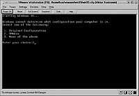
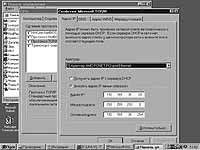
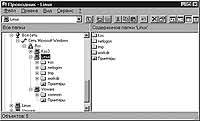
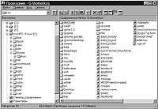
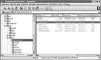

Журнал "Открытые системы", #11, 2001
год // Издательство "Открытые Системы" (http://www.osp.ru/)Постоянный адрес
статьи: http://www.osp.ru/os/2001/11/018.htm
Виртуальный компьютер: обмен данными с реальным
миром
Виктор
Костромин
06.12.2001
После того, как на ваш компьютер установлена система Vmware, позволяющая
работать на нем сразу с несколькими операционными системами [1], и создан
виртуальный компьютер, снабженный виртуальным диском, у вас возникает
естественное желание получить доступ к файлам на физическом диске. А если есть
возможность выхода в Сеть — то и желание подключить к ней виртуальный компьютер.
В статье разбираются детали выполнения этих операций.
Прежде чем описывать процедуру подключения физического диска к виртуальному
компьютеру, стоит предупредить о некоторых потенциальных опасностях. В
документации по VMware (www.vmware.com) говорится: «Поддержка
работы с физическими дисками является продвинутой особенностью VMware и может
использоваться только теми, кто уже знаком с продуктом. А чтобы познакомиться с
продуктом, вы должны, как минимум, создать и сконфигурировать виртуальную машину
с виртуальным диском и установить на нее операционную систему. Что касается
загрузки ранее установленной на физический диск ОС в виртуальном компьютере, то
для некоторых конфигураций аппаратного обеспечения и операционной системы она
может не работать». Это не означает, что подключение к виртуальной машине
реальных дисков невозможно. Просто делать это надо корректно, с соблюдением мер
предосторожности.
Основная опасность состоит в одновременном доступе к одному разделу
физического диска из нескольких операционных систем. Все ОС создавались в
расчете на полный контроль над компьютером, и, поскольку каждая из них не имеет
представления о другой, то, когда две ОС пытаются производить операции записи
или чтения в одном и том же разделе, может произойти потеря или разрушение
данных. VMware не регулирует дисковые операции базовой операционной системы,
поэтому раздел реального диска не должен одновременно использоваться (быть
смонтирован) в ОС на базовом компьютере и в виртуальной машине. Следовательно,
надо удостовериться, что базовая ОС «не видит» раздел, с которым работает ОС
виртуального компьютера, и, прежде чем подключить раздел реального диска к
виртуальной машине, размонтировать его в базовой ОС.
Подключение физического диска
Итак, предположим, что имеется виртуальный компьютер, на котором работает ОС
Windows, запускаемая с виртуального диска C:, а также раздел жесткого диска
(пусть это будет раздел /dev/hda2), отформатированныйFAT, FAT32 или NTFS, в
зависимости от варианта ОС. Естественно, возникает желание получить доступ к
этому разделу из виртуального компьютера. Попытаемся подключить этот раздел в
качестве диска D: виртуального компьютера. Для этого надо выполнить следующую
последовательность действий.
- Добавить пользователя, от имени которого будет запускаться VMware, в
группу disk (это делается путем редактирования суперпользователем файла
/etc/group).
- Убедиться в том, что подключаемый физический диск не смонтирован в
файловой системе базового компьютера.
- Чтобы создать файл описания физического диска, нужно запустить систему
VMware, выбрать нужную конфигурацию (но не включать питание виртуального
компьютера) и открыть пункт меню «Settings > Configuration Editor», после
чего щелкнуть по значку «+» слева от указания на диски IDE или SCSI.
- Найти строку, в которой указано, что соответствующий диск не установлен
(«Not installed») и установить на нее курсор. Так, наличие строки «P-S Not
Installed» среди дисков IDE будет означать, что виртуальная машина считает:
данный физический диск подключен как второй диск (slave) к первому контроллеру
(primary IDE controller). Соответственно, если в группе дисков SCSI найдется
строка «SCSI 0:1 Not Installed», то для виртуального компьютера такой диск
будет иметь номер 1 на SCSI-контроллере. Если строки «Not Installed» не
найдется, это означает, что к виртуальному компьютеру подключено уже 4
виртуальных диска IDE (или, соответственно, 7 дисков SCSI), и для подключения
физического диска надо отключить один из них.
- В поле «Device Type» установить (выбрать) значение «Raw Disk».
- В поле «Name» ввести имя для файла описания физического устройства
(например, raw_hda.dsk).
- Щелкнуть по клавише «Create Raw Disk».
- В появившейся строке ввода указать имя физического диска (не раздела, а
именно диска, например, /dev/hda для диска IDE или /dev/sda для SCSI), в
результате чего появится окно со списком разделов на данном физическом диске.
Для каждого раздела надо указать права доступа к нему виртуальной машины.
- No Access — виртуальный компьютер не сможет ни читать, ни писать
в данный раздел. Этот вариант используют только в том случае, если
необходимо проконтролировать попытки несанкционированного обращения к
разделу.
- Read/Write — виртуальный компьютер будет иметь возможность и
читать, и производить запись в раздел. Этот вариант выбирают только для
разделов, содержащих файловые системы, «родные» для операционной системы
виртуального компьютера.
- Read-Only — виртуальный компьютер будет иметь возможность только
читать из раздела. Это вариант для всех остальных разделов на диске.
- Щелкнуть по клавише «Save». В некоторых случаях в ответ на это может
появиться окно с сообщением, что два раздела на диске пересекаются (имеют
общие сектора) и, следовательно, для них должны быть заданы одинаковые права
доступа. Файл описания физического диска будет записан в каталог, где хранятся
остальные файлы виртуальной машины (что-то вроде /home/user1/vmware/nt4/).
- Щелкнуть по клавише «Install», чтобы присоединить выбранный физический
диск к виртуальному компьютеру. Как и в случае виртуального диска, можно
задать для физического диска один из трех возможных режимов работы [1]: «с
записью» («Persistent»), «без записи» («Nonpersistent») или «с отложенной
записью» («Undoable»).
После завершения этой последовательности действий можно загрузить ОС в
виртуальном компьютере, и в системе появится новый диск.
Для того чтобы отключить физический диск от виртуального компьютера
(например, чтобы смонтировать его в файловой системе базового компьютера),
следует открыть Редактор конфигурации и щелкнуть по клавише «Remove» на вкладке,
соответствующей данному диску. На этой же вкладке есть клавиша «Edit Raw
Disk...», с помощью которой можно откорректировать права доступа к разделам
диска, определяемые файлом описания физического диска. Это может понадобиться,
например, в тех случаях, когда был заменен физический диск или изменено
разбиение его на разделы.
Загрузка ОС с физического диска
Вопрос «Нельзя ли загружать ОС виртуального компьютера с физического диска?»
особенно актуален в том случае, когда до установки VMware на компьютере в разные
разделы уже была установлена как ОС Linux (в которой запускается виртуальный
компьютер), так и одна из версий Windows [2]. Ответ на этот вопрос положителен.
Более того, VMware может использовать загрузчики, установленные на компьютере
ранее. Загрузчик будет работать внутри VMware и даст возможность пользователю
выбрать ОС, запускаемую на виртуальном компьютере. Можно и заново установить ОС
(скажем, Windows 98) на физический диск, а потом запускать ее в виртуальной
машине.
Использование установленной на физическом диске операционной системы
сопряжено с некоторыми особенностями; их надо учитывать при настройке ОС.
Во-первых, версия VMware 2.0 поддерживает загрузку с реальных дисков только для
IDE-устройств (при этом файл, моделирующий виртуальный диск, можно расположить
как на диске IDE, так и на SCSI). Во-вторых, необходимо создать отдельный
профиль оборудования для Windows.
Операционные системы Windows 95/98/NT используют понятие «профиля
оборудования». Каждый профиль определяет некоторый набор известных системе
устройств. Если заданы два или более профиля, пользователю в процессе загрузки
предлагается выбрать один из них. Благодаря механизму Plug and Play, в процессе
загрузки эти ОС (кроме NT) проверяют, отвечают ли реальные устройства указанному
профилю оборудования. Несоответствие приводит к тому, что механизм определения
устройств и установки драйверов запускается заново. В большинстве случаев этот
процесс завершается успешно, однако существенно замедляет загрузку. NT не
поддерживает Plug and Play и использует профиль оборудования для инициализации
устройств. Если реальный набор не соответствует тому, что указано в профиле,
выдается сообщение об ошибке, а устройство не подключается. А поскольку
конфигурация виртуального компьютера отличается от конфигурации компьютера
физического, то для запуска ОС от Microsoft внутри виртуальной машины надо
создать отдельный профиль оборудования, чтобы упростить процесс загрузки.
Поэтому процесс создания и конфигурирования виртуальной машины, которая
использует операционную систему, установленную в один из разделов физического
диска, имеет некоторые отличия от процесса создания виртуальной машины,
работающей с виртуальными дисками.
- Вначале надо установить на физический диск IDE реального компьютера
операционную систему, которую требуется запускать на виртуальном компьютере.
- До запуска VMware загрузить на реальном компьютере эту ОС и создать два
профиля оборудования. Для этого открыть «Панель управления», войти в пункт
«Система» и переключиться на вкладку «Профиль оборудования». Там уже имеется
как минимум один профиль, который называется «Текущий». Щелкнуть по кнопке
«Копировать» и ввести название нового профиля, например, «Виртуальная машина».
- Только для NT/2000. Отключить некоторые устройства во вновь созданном
профиле, открыв пункт «Устройства» в «Панели управления», выбрав отключаемое
устройство и нажав клавишу «Остановить» (необходимо отключить аудио-плату,
MIDI, джойстик, Ethernet и другие сетевые платы, а также USB-устройства;
отключать их надо только во вновь созданном профиле, не промахнитесь). Если в
виртуальном компьютере предполагается запускать Windows 95 или Windows 98, то
отключать устройства не требуется; это будет сделано автоматически на стадии
загрузки ОС.
- Перезагрузить компьютер и запустить Linux.
- Убедиться, что раздел физического диска, который отведен для использования
операционной системой виртуального компьютера, не смонтирован в Linux. Удалить
(закомментировать) соответствующую строку в файле /etc/fstab, а в текущем
сеансе размонтировать этот раздел непосредственно из командной строки.
- Задать права доступа к разделам жесткого диска. Самый простой способ
сделать это заключается в том, чтобы включить пользователей VMware в группу
disk, дав тем самым доступ ко всем физическим устройствам /dev/hd[abcd],
которые содержат операционные системы или загрузчик, а в вопросах
разграничения доступа положиться на конфигурационные файлы VMware. Тем самым
обеспечивается доступ загрузчика к файлам, необходимым для запуска
операционных систем (например, LILO требуется доступ на чтение к каталогу
/boot в разделе Linux для запуска операционных систем, отличных от Linux,
которые могут быть расположены на других разделах или дисках).
- Сконфигурировать виртуальную машину под вновь установленную ОС, используя
Мастер конфигурации или Редактор конфигурации. Выполняя процедуру конфигурации
для реальных дисков, при выборе типа виртуального диска следует выбрать пункт
«Existing Partition». Для раздела диска, в котором находится соответствующая
операционная система, установить права на чтение и запись. Для основной
загрузочной записи и для других разделов рекомендуется предусмотреть право на
чтение (вновь напомним, в частности, что загрузчик LILO должен иметь
возможность прочитать файл из каталога /boot в разделе Linux).
- Запустить VMware и проверить созданную конфигурацию. Это можно проделать
при помощи команды vmware <config-file>, где <config-file> —
полное маршрутное имя конфигурационного файла, созданного Мастером
конфигурации (имена таких файлов имеют расширение .cfg).
Открыть пункт меню «Settings > Configuration Editor» и убедиться в том,
что в конфигурации дисков IDE указан хотя бы один физический диск («Raw Disk»)
и для него введено имя файла описания диска. Эти имена обычно имеют вид
наподобие <configuration-name>.hda.dsk,
<configuration-name>.hdb.dsk, и т.д. Полезно проверить и другие
параметры конфигурации, особенно те, для которых указано значение по
умолчанию, например, объем памяти виртуальной машины.
- Включить питание виртуальной машины (кнопка «Power On»). VMware запускает
Phoenix BIOS, после чего считывается главная загрузочная запись загрузочного
диска. Если система была сконфигурирована с использованием нескольких дисков
IDE, VMware BIOS попытается произвести загрузку ОС с этих дисков в следующей
последовательности: Primary Master, Primary Slave, Secondary Master, Secondary
Slave. При наличии нескольких дисков SCSI загрузка производится в порядке
номеров SCSI-устройств. Если в системе сконфигурированы диски обоих типов,
VMware BIOS сначала пытается загрузить ОС со SCSI-устройств, затем — с IDE.
Порядок обращения к дискам в процессе загрузки можно изменить через пункт меню
«Boot» в BIOS виртуальной машины (чтобы попасть в меню BIOS, после включения
питания VMware надо нажать клавишу F2).
- Если предусмотрена многовариантная загрузка, выбрать нужную ОС из
предлагаемого при загрузке меню.
 |
| Рис. 1. Выбор профиля оборудования для виртуального
компьютера |
- В процессе загрузки ОС должно появиться меню выбора конфигурации (если,
конечно, для виртуального компьютера был создан отдельный профиль
оборудования). Ввести номер, соответствующий конфигурации виртуального
компьютера (см. рис. 1).
- Только для Windows 2000. После того, как в качестве ОС на виртуальном
компьютере запустится Windows 2000, появится диалоговое окно «Найдено новое
оборудование», в котором предлагается установить новый драйвер для
видео-контроллера. Этого делать не нужно. Windows 2000 автоматически обнаружит
и установит драйвер для сетевой платы AMD PCnet PCI Ethernet. Затем на
виртуальном компьютере надо установить пакет VMware Tools. После того, как
будет установлен SVGA-драйвер от VMware, перезагрузить Windows 2000 на
виртуальной машине; затем можно поменять разрешение экрана виртуальной машины.
Только для Windows 95/98. В окне «Обнаружено новое оборудование» Windows
предложит провести поиск драйверов. Для большинства устройств драйверы уже
установлены, однако, в некоторых случаях может понадобиться установочный
компакт-диск, и Windows попросит несколько раз перезагрузиться. Windows может
не распознать компакт-диск, тогда рекомендуется указать в качестве пути к
драйверу каталог C:\windows\system\ или отказаться от установки драйвера.
Подключить такие устройства можно позже. Когда Windows установит виртуальные
устройства и драйверы для них, надо удалить из системы неработающие
устройства, соответствующие реальному оборудованию. Для этого, используя
вкладку «Панель управления > Система > Устройства», выбрать неработающее
устройство и щелкнуть по клавише «Удалить» (предварительно надо выбрать
профиль оборудования, соответствующий виртуальному компьютеру, чтобы не
удалить устройства, работающие при запуске ОС с физического диска).
Только для Windows NT. После завершения загрузки ОС просмотреть протокол
загрузки, чтобы выявить устройства, которые не подключились; их можно
отключить в профиле «Виртуальный компьютер», используя «Панель управления >
Устройства».
- Убедиться, что все виртуальные устройства работают корректно, особенно
сетевые платы. Помните, что состав оборудования виртуального компьютера
существенно отличается от набора устройств, реально имеющихся на физическом
компьютере.
Только для Windows 95/98. Если какое-то виртуальное устройство отсутствует,
следует воспользоваться меню «Панель управления > Добавить новое
оборудование».
- Установить VMware Tools. Данный пакет будет запускаться в обеих
конфигурациях оборудования, но окажет какое-то влияние на работу только в
конфигурации «Виртуальный компьютер».
При следующей загрузке Windows в реальном компьютере с использованием профиля
оборудования, соответствующего реальной конфигурации аппаратуры, в списке
устройств могут появиться некоторые виртуальные устройства; их можно удалить или
отключить уже описанным способом. Если при задании конфигурации виртуального
компьютера для реального диска установлен режим «с отложенной записью»
(«undoable») [1], то при перезагрузке ОС нужно либо согласиться с тем, чтобы все
операции с диском, проделанные внутри виртуальной машины, сохранялись на диске,
либо отказаться от сохранения изменений.
Альтернативный способ доступа к физическим дискам
Когда есть необходимость в обмене данными между базовым компьютером и
виртуальным, один и тот же диск можно подключать к этим компьютерам поочередно.
Для этого потребуется вначале смонтировать раздел в базовой ОС Linux, перенести
в него необходимые данные, размонтировать диск, запустить VMware и виртуальный
компьютер, скопировать данные на виртуальный диск, выключить VMware и вновь
отдать диск базовой ОС. Конечно, такой способ обмена данными очень неудобен.
Кроме того, подключить физический диск к виртуальному компьютеру удается не
всегда. Очевидная причина затруднений может состоять в том, что на физическом
диске создана файловая система, с которой не умеет работать ОС виртуального
компьютера. И хотя можно пытаться установить специальные драйверы, делать этого
не стоит, поскольку обмен данными с базовым компьютером, как и со всем остальным
миром, можно организовать с помощью сетевых средств.
Поддержка сетевых возможностей в операционной системе виртуального компьютера
осуществляется с помощью виртуальных Ethernet-плат. К одному виртуальному
компьютеру можно подключить до трех таких плат; они «представляются»
операционной системе как платы типа AMD PCnet PCI. Большинство операционных
систем распознают такие платы и автоматически подключают соответствующий
драйвер. Кроме того, вместе с VMware на базовом компьютере устанавливаются
специальные драйверы, которые организуют четыре виртуальных сетевых интерфейса:
vmnet0, vmnet1, vmnet2 и vmnet3. Каждый интерфейс ассоциируется с виртуальным
Ethernet-концентратором, через который к базовому хосту можно подключить любое
число виртуальных компьютеров. Обычно vmnet0 используется в варианте «Bridged
networking», vmnet1 — для «Host-only networking», а оставшиеся два интерфейса —
для «Custom networking».
Начиная с версии VMware Workstation 2.0 для Linux одновременно с системой
VMware на базовом компьютере можно установить сервер Samba, который необходим
для предоставления ресурсов базового компьютера через сеть. Правда, сервер этот
слегка модифицирован по сравнению с обычным сервером Samba, чтобы обеспечить
поддержку виртуальных Ethernet-плат. Вообще говоря, можно запустить на базовом
компьютере одновременно как стандартный сервер Samba, так и тот его вариант,
который поставляется вместе с VMware Workstation. Однако версия стандартного
сервера Samba должна быть не ниже 2.0.6 и его следует корректно
сконфигурировать; определить версию Samba можно командой smbd -V, а для его
корректной настройки в VMware предлагают воспользоваться примером
конфигурационного файла smb.conf, размещенном на сайте компании.
При создании виртуального компьютера можно отказаться от конфигурирования
сетевой поддержки [1], однако чтобы такую поддержку задействовать, придется
переустановить VMware. К счастью, сделать это очень просто, причем при
переустановке не нарушается конфигурация созданных в системе виртуальных
компьютеров (в частности, сохраняется вся информация, записанная на виртуальных
дисках). И конфигурация виртуальных машин, и все относящиеся к ним файлы
хранятся в двух подкаталогах домашнего каталога пользователя, создавшего
виртуальный компьютер: ~/vmware и ~/.vmware. Эти каталоги не изменяются при
переустановке ПО VMware, и ранее созданные виртуальные машины после такой
переустановки будут снова запускаться без проблем (по крайней мере, если не
менять версии ПО). Для того чтобы переустановить VMware, ее надо сначала
удалить, а потом установить заново. Если она устанавливалась из RPM-пакета, то
переустановка выполняется командами
[root]# rpm -qa | grep VMware
(позволяет узнать точное имя установленного пакета, которое требуется,
например, в следующей команде)
[root]# rpm -e VMware-2.0.3-799
[root]# rpm -Uhv VMware-2.0.3-799.i386.rpm
Перед запуском третьей команды надо перейти в каталог, где располагается
указанный пакет. Если ОС устанавливалась из tar-архива, то для ее удаления надо
запустить скрипт vmware-uninstall.pl.
После переустановки нужно определиться с вариантом подключения — «Host-only»
или «Bridged», а затем запустить скрипт vmware-config.pl и теперь уже не
пропускать этап задания конфигурации сети. Выбор варианта конфигурации сетевых
средств определяется ответами на вопросы этого скрипта.
Первый вопрос призван определить, будет ли на базовом компьютере установлен
вариант сервера Samba от VMware. В данном случае требуется еще решить, задать ли
IP-адреса самостоятельно или предоставить их выбор скрипту. Если будет
использоваться вариант «Bridged networking», то следует указать реальный адрес,
полученный от администратора сети. Если же решено создать виртуальную сеть
(«Host-only networking»), то лучше предоставить выбор адресов скрипту; впрочем,
и в этом случае можно задать адреса самому.
Если же на первый вопрос ответить отрицательно, то следующий вопрос призван
выяснить, будет ли вообще поддерживаться сеть. В случае же утвердительного
ответа скрипт еще раз интересуется, не нужно ли сконфигурировать вариант
«Host-only networking». Если ответить «нет», то может использоваться только
вариант «Bridged networking», о чем свидетельствует следующее сообщение:
Starting VMware services:
Virtual machine monitor [ OK ]
Virtual ethernet [ OK ]
Bridged networking on
/dev/vmnet0 [ OK ]
Интерфейс vmnet0, используемый для варианта «Bridged networking»,
задействуется в любом случае, даже если пытаться настроить сетевые службы VMware
только на использование варианта «Host-only».
Далее надо запустить VMware, выбрать нужный конфигурационный файл
виртуального компьютера (меню «File/»Open»), не запуская виртуальный компьютер,
запустить Редактор конфигурации (меню «Settings» > «Configuration Editor») и
щелкнуть по значку «+» слева от надписи «Ethernet Adapters». Появятся три
дополнительные строки, соответствующие трем возможным виртуальным сетевым
платам. Следует переместить курсор на первую из этих строк, щелкнуть по
треугольнику возле выпадающего меню выбора типа подключения («Connection Type»)
и выбрать один из трех возможных вариантов («Bridged», «Host-only» или
«Custom»). Вариант «Custom» выбирать не стоит, пока не освоена система VMware.
После этого надо щелкнуть по клавише «Install» и сохранить конфигурацию щелчком
по клавише «Safe».
На этом установка необходимых сетевых средств VMware завершена. Теперь
требуется сконфигурировать сетевые службы операционной системы, запускаемой на
виртуальном компьютере. При этом в качестве сетевой платы надо выбрать AMD PCnet
PCI Ethernet, а затем либо задать фиксированный сетевой адрес, либо
задействовать динамическое получение адреса посредством DHCP.
Подключившись к реальной физической сети, можно «увидеть» другие компьютеры
локальной сети (в этом можно убедиться, раскрыв в Windows окно «Сетевое
окружение»), а следовательно, и получить доступ и к тем дискам, каталогам,
принтерам, которые на этих компьютерах отданы «в общее пользование». Однако
ресурсы базового компьютера, скорее всего, еще не видны. Для того чтобы
предоставить доступ из Windows к дискам Linux-компьютера, необходимо запустить
на последнем сервер Samba и правильно его настроить.
Несколько примеров настройки выхода в сеть
Подключение к существующей сети в варианте «Bridged»
 |
| Рис. 2. Настройка сетевых средств в ОС виртуального
компьютера |
Базовый компьютер, работающий под управлением Linux, уже подключен к
физической сети, на нем работает сервер Samba, предоставляющий некоторые
каталоги в распоряжение других рабочих станций сети. Создание виртуальной сети
из виртуальных компьютеров не планируется. В таком случае нужно сконфигурировать
сетевые службы VMware в варианте «Bridged networking», получить у администратора
сети реальный IP-адрес, маску сети, адреса серверов DNS и WINS и настроить
сетевые службы ОС на виртуальном компьютере с использованием этих адресов.
Пример такой настройки приведен на рис. 2, а на рис. 3 показано, как выглядит
«Сетевое окружение» для небольшой сети из двух физических компьютеров. На
Linux-компьютере запущена система VMware и виртуальный компьютер VMware,
подключенный к физической сети по рассматриваемому варианту. Компьютер VMware
выступает полноправным участником сети и получает доступ к дискам базового
компьютера (приведенный снимок сделан в окне экрана виртуального
компьютера).
 |
| Рис. 3. Доступ к диску базового компьютера через окно
«Сетевое окружение» |
Необходимо отметить одну особенность настройки сетевых средств на виртуальном
компьютере, проявляющуюся тогда, когда ОС виртуального компьютера загружается с
физического диска: надо обязательно создать отдельный профиль оборудования для
загрузки Windows в виртуальном компьютере. В этом профиле необходимо отключить
реальную Ethernet-плату, в противном случае могут возникнуть трудности с
подключением адаптера AMD PCnet PCI, который должен работать в виртуальном
компьютере. Впрочем, то же самое верно и для других вариантов.
Создание сети на изолированном компьютере
 |
| Рис. 4. Диск базового компьютера смонтирован как диск
G: |
При конфигурировании VMware в этом случае надо выбрать вариант «Host-only
networking» и установить сервер Samba в версии vmware-smbd (при этом будет также
установлен демон vmware-nmbd и будет организован их запуск при загрузке ОС
Linux). Конфигурационный файл для сервера vmware-smbd располагается не в
каталоге /etc/samba, как для стандартного сервера Samba, а в каталоге
/etc/vmware/vmnet1/smb, хотя и называется он по-прежнему smb.conf и имеет ту же
структуру. Естественно, необходимо настроить сетевые службы в ОС Linux базового
компьютера и на виртуальном компьютере. IP-адреса можно задать произвольным
образом. Поскольку в такой сети будет работать только несколько компьютеров (в
простейшем случае всего два), то сервер DHCP запускать не имеет смысла, проще
прописать все компьютеры и их адреса в файле /etc/hosts. На иллюстрирующем
данный вариант рис. 4 показано, что весь диск базового компьютера подключен к
виртуальному компьютеру как сетевой диск G:; в окне проводника Windows
отображается структура каталогов Linux.
Соединение виртуальной и физической сети
Теперь предположим, что нужно создать несколько виртуальных компьютеров на
одном базовом, объединить их в виртуальную сеть и связать ее с реальной сетью.
При этом сетевая часть IP-адреса виртуальной сети отличается от сетевой части
адреса реальной сети. В этом случае система VMware вновь конфигурируется по
варианту «Host-only networking». Только теперь необходимо указать серверу Samba,
что он должен обслуживать как интерфейс с реальной сетью (или даже несколько
таких интерфейсов), так и виртуальный интерфейс vmnet1. Делается такое указание
путем корректировки строки «interfaces» в файле /etc/smb.conf. Она должна
принять следующий вид:
interfaces = <физические сети>
<виртуальная сеть>.1/24
где <физические сети> — это список обслуживаемых физических
сетей, а <виртуальная сеть> — сетевая часть адреса, назначенного
для виртуальной сети. Предположим, что базовый компьютер имеет в реальной сети
адрес 209.220.166.34, а в виртуальной сети в варианте «Host-only» ему присвоен
адрес 192.168.0.1. Тогда указанная строка принимает вид:
interfaces = 209.220.166.34/24 192.168.0.1/24
Маску сети можно задать явным образом:
interfaces = 209.220.166.34/
255.255.255.0 92.168.0.1/
255.255.255.0
Чтобы узнать, какой IP-адрес присвоен виртуальному интерфейсу, можно
воспользоваться командой
/sbin/ifconfig vmnet1
Во всех трех рассмотренных примерах речь шла о том, как получить доступ к
дискам базового компьютера из виртуального. Однако можно поставить и обратную
задачу: как получить доступ к дискам виртуального компьютера из ОС базового? При
помощи сетевых средств такая задача тоже решается. Если на базовом компьютере
установлен пакет Samba, то отдельные каталоги на дисках виртуального компьютера
vmware, работающего под Windows, можно монтировать в Linux на базовом компьютере
примерно такой командой
[user]$ /usr/sbin/smbmount //vmware/
public /mnt/vm1 -U user1
 |
| Рис. 5. Каталог на диске виртуального компьютера,
смонтированный в файловую систему Linux |
Эта возможность проиллюстрирована на рис. 5, где показан каталог на диске
виртуального компьютера, смонтированный в файловую систему Linux. При этом в
виртуальном компьютере запущен Microsoft Word, о чем свидетельствует наличие
временных файлов, создаваемых этой программой. Сам же каталог в данном случае
просматривается из Linux при помощи браузера Konqueror.
Одним из последних вопросов, задаваемых конфигурационным скриптом
vmware-config.pl в том случае, когда установлена версия сервера Samba от VMware,
является предложение ввести имена и пароли пользователей, которым будет разрешен
доступ к серверу. Если в этот список требуется добавить новых пользователей,
нужно проделать следующее.
- Получить права суперпользователя при помощи команды su.
- Выполнить команду
/usr/bin/vmware-smbpasswd vmnet1
-a <username>
где <username> — имя пользователя, добавляемого в список.
- Выполнить то, что говорится в последовательности инструкций, появляющихся
на экране.
- Вернуть права суперпользователя посредством команды exit.
Программа vmware-smbpasswd является вариантом стандартной программы
smbpasswd. Сообщение «Unknown virtual interface «vmnet1» означает, что либо не
установлен сервер Samba от VMware, либо не задействован вариант «Host-only».
Предпочтение сетевым возможностям
Если сравнивать два рассмотренных в данной статье способа получения доступа к
физическим дискам, то предпочтение следует отдать способу, основанному на
сетевых возможностях VMware. Во-первых, в этом случае не приходится думать о
риске одновременного обращения к диску из разных операционных систем. Во-вторых,
решаются вопросы обмена данными не только с локальным физическим диском, но и с
другими компьютерами. В-третьих, обмен данными становится двусторонним, так как
не только виртуальный компьютер получает доступ к физическим дискам, но можно
получить доступ и к дискам виртуального компьютера из ОС базового компьютера, а
также из других компьютеров в сети. Монтирование чужих дисков может
осуществляться одновременно как в том, так и в другом компьютере. И, наконец,
возможен не только доступ к дискам, но и к другим сетевым ресурсам, например, к
принтерам.
Литература
[1] Виктор Костромин. «Две системы на одном компьютере».
«Открытые системы», 2001, № 7-8
[2] Виктор Костромин. «Linux вместе с
Windows». «Открытые системы», 2001, № 3
Виктор Костромин (http://linux-ve.chat.ru/) — независимый
эксперт.
Права доступа к дискам. Жесткие диски, к которым предполагается
получить доступ из виртуального компьютера, должны быть доступны как на чтение,
так и на запись для пользователей, которые запускают VMware. В большинстве
дистрибутивов Linux физические диски (такие как /dev/had и /dev/hdb) принадлежат
группе disk. Если это так, то пользователей VMware можно добавить в эту группу.
Можно также просто поменять владельца устройства (но при этом стоит задуматься
об обеспечении безопасности).
Файл описания физического диска. Чтобы система VMware могла получить
доступ к физическим дискам, для каждого из них должен быть создан файл,
содержащий данные, необходимые виртуальной машине для получения доступа к
разделам данного диска. В документации такой файл называют Safe Raw Disk, мы же
будем называть его файлом описания физического диска. Вот типичный пример такого
файла для диска /dev/hda, на котором установлены Windows NT и Linux:
DEVICE /dev/hda
# Partition type: MBR
RDONLY 0 62
# Partition type: HPFS/NTFS
ACCESS 63 8193149
# Partition type: Linux swap
NO_ACCESS 8193150 8466254
Файл содержит информацию о разделах диска, типе файловой системы в каждом
разделе (правда, только в строке комментария) и правах доступа к разделу,
которую можно представить приведенной здесь таблицей.
| Тип раздела |
Размещение (сектора) |
Права доступа |
| Загрузочная запись |
с 0 по 62 включительно |
Только чтение |
| NTFS или FAT |
с 63 по 8193149 включительно |
Чтение и запись |
| Область подкачки Linux |
с 8193150 по 8466254 включительно |
Нет доступа |
Если операционная система, запущенная на виртуальном компьютере, попытается
произвести операции чтения или записи в сектора, доступ к которым, согласно
файлу описания физического диска, запрещен, VMware выдаст диалоговое окно, в
котором потребует подтвердить правомочность данной операции или отказаться от ее
выполнения.
Четыре варианта организации сетевых служб в VMware
- «No networking». Виртуальная машина работает сама по себе, не имея
возможности взаимодействовать с операционной системой базового компьютера или
другими компьютерами. Этот вариант стоит рассматривать в том случае, когда
виртуальная машина будет использоваться для тестирования программного
обеспечения или для обеспечения безопасности хранимых на ней данных. Задать
такую конфигурацию очень просто: достаточно при конфигурировании виртуальной
машины не подключать сетевую плату.
- «Host-only networking». Виртуальный компьютер сможет
взаимодействовать с операционной системой базового компьютера и любым
виртуальным компьютером, запущенным на базовом компьютере, также имеющим
сетевые возможности. Но виртуальный компьютер в такой конфигурации не сможет
взаимодействовать с системами, находящимися вне базового компьютера (если
только не используется прокси-сервер на базовом компьютере). Создается своего
рода виртуальная частная сеть, состоящая из базового компьютера и всех
запущенных на нем виртуальных. Обычно хосты такой сети используют стек
протоколов TCP/IP, хотя использовать именно его не обязательно. Но какие бы
протоколы не использовались, каждый компьютер в такой сети должен иметь свой
адрес. Адреса могут назначаться «статически» или «динамически»; в последнем
случае используются такие протоколы, как DHCP. Данный вариант конфигурации
можно использовать, когда базовый компьютер не подключен ни к какой сети, или
когда требуется изолировать виртуальный компьютер от внешних систем. Такая
конфигурация аналогична соединению внутренней сети с Internet через межсетевой
экран или прокси-сервер.
- «Bridged networking». Виртуальная машина будет подключаться к
локальной сети, используя реальную Ethernet-плату основного компьютера,
выполняющую функции «моста» между виртуальной машиной и физической сетью. Это
позволяет виртуальному компьютеру выглядеть с точки зрения реальной сети как
полноценный хост. Назначение сетевых адресов осуществляется в соответствии с
правилами, принятыми в реальной локальной сети: можно либо подключаться по
протоколу DHCP, либо получить у администратора статический IP-адрес.
Виртуальная машина, подключенная таким образом, может использовать любые
службы локальной сети, к которой она подключена: принтеры, файловые серверы,
маршрутизаторы и т.д. Точно так же она может предоставить в сеть какие-то из
своих ресурсов. Это наиболее часто используемая конфигурация сетевого
подключения виртуального компьютера. Для того чтобы настроить данный вариант
сетевой конфигурации, необходимо установить сетевую плату и выбрать для нее
тип подключения «Bridged»; в операционной системе виртуального компьютера надо
произвести настройку сетевых служб.
- «Custom networking». Виртуальный компьютер может использовать как
реально существующее Ethernet-соединение основного компьютера, так и
виртуальную сеть. Этот вариант предоставляет широкие возможности по построению
сети из виртуальных компьютеров. Например, можно организовать виртуальную
частную сеть из виртуальных компьютеров, размещающихся на нескольких
физических хостах реальной сети. Однако настройка таких сетей требует хорошего
понимания принципов построения локальных сетей и потому может быть
рекомендована только опытным пользователям. Более того, процедура настройки
этого варианта в фирменной документации практически не описана.
Журнал "Открытые системы", #11, 2001
год // Издательство "Открытые Системы" (http://www.osp.ru/)Постоянный адрес
статьи: http://www.osp.ru/os/2001/11/018.htm